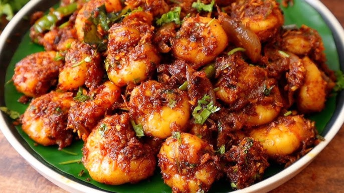

Home
Royyala Vepudu Recipe

Description
Royyala Vepudu (Spicy Andhra-style Prawn Fry) is a popular coastal Andhra dish that’s loved for its fiery, tangy flavors and crispy texture. Fresh prawns are marinated with a blend of spices including chili powder, turmeric, and garam masala, then sautéed with onions, green chilies, and curry leaves until perfectly cooked and slightly crisp on the edges. This dry, flavorful prawn fry pairs excellently with steamed rice and rasam or as a spicy side with chapati.
The key to a great Royyala Vepudu lies in using fresh prawns and cooking them quickly over medium-high heat to retain their juiciness while developing a spicy crust. Aromatic ingredients like ginger-garlic paste and mustard seeds add depth, while curry leaves and lemon juice brighten the dish with a distinct South Indian flair.
Ingredients
For fry
- 500g fresh prawns, cleaned and deveined
- 2 tbsp oil (preferably peanut or sesame)
- 1 tsp mustard seeds
- 1 sprig curry leaves
- 1 large onion, finely sliced
- 2 green chilies, slit
- 1 tbsp ginger-garlic paste
- 1 tsp turmeric powder
- 1½ tsp red chili powder (adjust to taste)
- 1 tsp coriander powder
- ½ tsp garam masala
- Salt to taste
- Juice of ½ lemon
- Fresh coriander leaves for garnish
Steps
- Marinate the prawns with turmeric, red chili powder, coriander powder, garam masala, and salt. Set aside for 15–20 minutes.
- Heat oil in a pan and add mustard seeds. Once they splutter, add curry leaves and green chilies.
- Add sliced onions and sauté until golden brown. Stir in ginger-garlic paste and cook until raw smell disappears.
- Add the marinated prawns and cook on medium-high heat. Stir frequently until prawns turn pink and are cooked through (about 7-10 minutes).
- Squeeze lemon juice over the prawns, give a quick stir, and switch off the heat.
- Garnish with fresh coriander leaves and serve hot with steamed rice or roti.